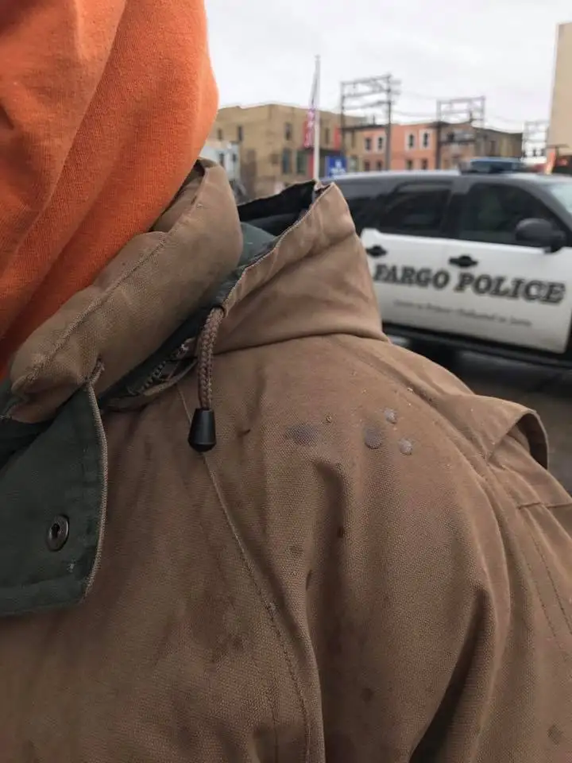
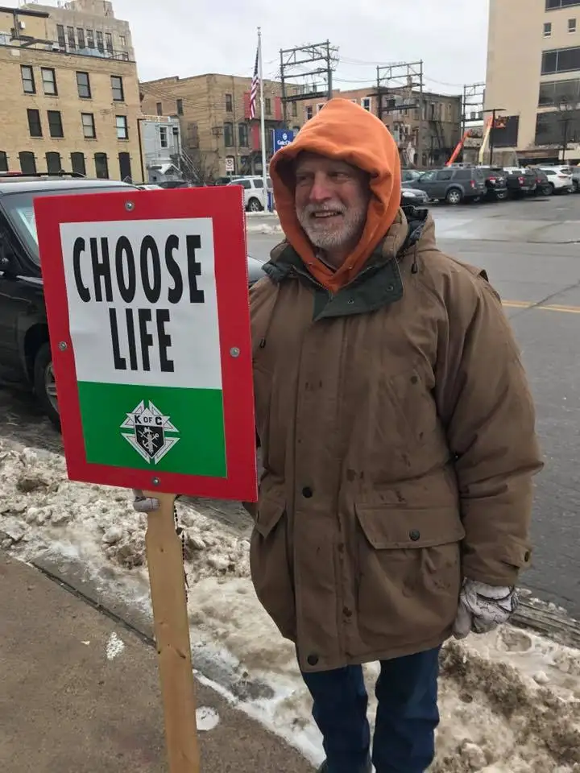

It’s time for a little update on what’s been happening on the sidewalk at our state’s only abortion facility.
When I showed up there to pray with fellow sidewalk prayer advocates this past Wednesday, Jan. 10, it didn’t take long for me to notice the police car, and soon, I was receiving an update on what had happened a very short time before my arrival.
Here’s a closeup of the coat of one of our faithful sidewalk advocates who shows up regularly, and who greeted me as I approached the sidewalk that day. At some point, he mentioned what had just happened. “I was baptized with pop,” he said, showing me the splashes of soda that were still visible on his coat.

It wasn’t long before I’d learn that, along with some curse words directed at the prayer advocates, and the angry person brandishing a knife, this was the incident that had brought the police to the sidewalk. They were still interviewing people in those first minutes of my arrival about what had occurred. A little while later, a camera — from WDAY TV we know now — showed up to snap some footage of the facility and surrounding sidewalk and people.
The story that resulted was included, the next day, in a small news brief. There may have been something longer on the evening news. Either way, one of the advocates, Nick, who is another of our most committed prayer partners and who witnessed these incidences, wanted to share what happened that day, from the perspective of the prayer advocates, since it’s rare our perspective is reported, or accurately or fully.
Since he doesn’t have a blog or other way to share his version of the story, I offered to help by sharing it here. We are grateful for the police responding, and hope that when incidences like this happen, the public will be given as much of the story, and as accurately, as possible so the public can be better informed about what actually takes place on the sidewalk on Wednesdays.
Here’s Nick’s version:
“On Wednesday, January 10, pro-lifers who were gathered outside of the Fargo abortion facility, were threatened with violence from a pro-abortion supporter. At about 10:30 a.m., a woman and a man were walking down the sidewalk, when the woman threw her soda on a pro-lifer who was standing on the corner of 5th Street and 1st Avenue. From there she continued walking down the sidewalk on 1st Avenue. When she got by the entrance of the facility where two pro-lifers were standing, the woman proceeded to point a knife at them and said to ‘f-in g o home, go to church,’ and kept walking westbound on 1st Avenue. Police were eventually called and they responded. The woman was found at a skate shop on 1st Avenue. The police spoke with her, but she was not arrested and no charges were filed because the pro-lifer who was threatened with a knife forgave her.”
We appreciate those of you who pray for us, in lieu of not being about to join us in our quest to offer women who are despairing a way out of what could possibly be the biggest regret of their lives. One cannot undo motherhood – or fatherhood for that matter. Abortion is society’s current “solution of desperation” for unplanned pregnancy, but there are better, more creative, more loving ways to respond to these situations. We aim to bring those possibilities to the sidewalk.

Q4U: What are your perceptions about the sidewalks near abortion facilities? What would you like to know about what sidewalk advocacy is?